Commands for the Turtle
Here are the commands you can give to your turtle on the turtle tab.
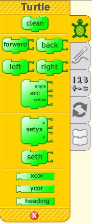
|
|
clean - Clears the screen of all drawings and sends the turtle to the middle. |
|
|
|
forward - Moves the turtle forward the number of pixels entered. | 
|
|
|
back - Moves the turtle backward the number of pixels listed. | 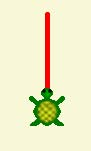
|
| 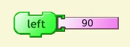 | left – Changes the turtle’s direction to the turtle’s left by the angle specified.
|
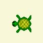
|
| right – Changes the turtle’s direction to the turtle’s right by the angle specified.
|
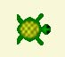
|
|
| 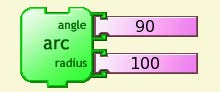 | arc – Draws part of a circle. The angle is the part of the circle the turtle draws. The radius determines the width (size) of the circle. | 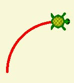
|
Here is a sample of some angles. They can be used for the right and left commands and to draw arcs.
| 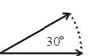 | 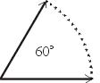 | 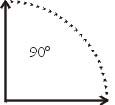 | 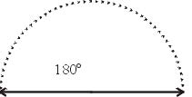 |
Author : StarterCommands
© Anne Gentle 2008
Modifications:
adam hyde 2008
Tom Boyle 2008
License : General Public License
Produced in FLOSS Manuals (http://www.flossmanuals.net)